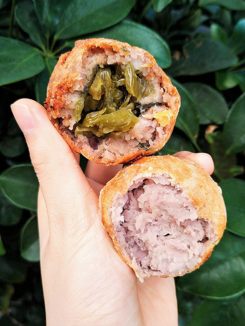

阿信芋頭丸｜芋頭控大愛！榮華市場外俗擱實在的銅板美食（捷運士林站）
阿信芋頭丸是華榮街與中正路口附近的小攤車，士林捷運站步行約分鐘，
不像夜市的攤販口味華麗，只賣原味、酸菜，幸運的話也有鹹蛋黃和季節性口味。
阿伯總是笑臉迎人，非常親切，處理每個細節都是小心翼翼，
到底滋味如何？就讓我們一探究竟！
芋泥裹上一層薄薄的日本太白粉定型，再以棕櫚油和芥花油炸得酥黃，
阿伯堅持每天換油，色澤也不似一般炸物深，吃得更安心
個頭不小的芋丸紮實，拿在手中乾爽不油膩
原味芋頭丸 NT.15
原味芋泥加入些少許紅糖提味，鬆軟綿密又帶點顆粒感，
不添加過多的粉，保留了最單純、古早味的芋頭香氣與淡雅的甜，
沉甸甸的有飽足感，讓芋頭控深深著迷
酸菜芋頭丸 NT.15
芋泥本身混入些許紅豆與蛋黃，吃起來帶著微微鹹香，
裏頭包裹阿伯手炒的大塊酸菜，清甜脆口，不重味的回甘，
和原味芋泥比起來層次更豐富些，也是好吃
下次經過還要再試試芋頭蛋黃口味！
地址： 華榮市場外圍義美食品附近 or 中正路與文林路交叉口
營業時間：15:30~19:00（不定期公休，請見ＦＢ公告）
以上純屬個人心得，歡迎交流分享
更多美食即時動態&手作早餐breakfastgirl.fooddiary
延伸閱讀
台北中山｜無敵食堂～招牌皮蛋系小吃大膽玩創意！懷舊食材的新味覺體驗（捷運中山站）～
台北大同｜古一小舍～印度雞腿咖哩深度飄香！大稻埕水岸旁的憨厚咖啡廳（捷運北門站）～